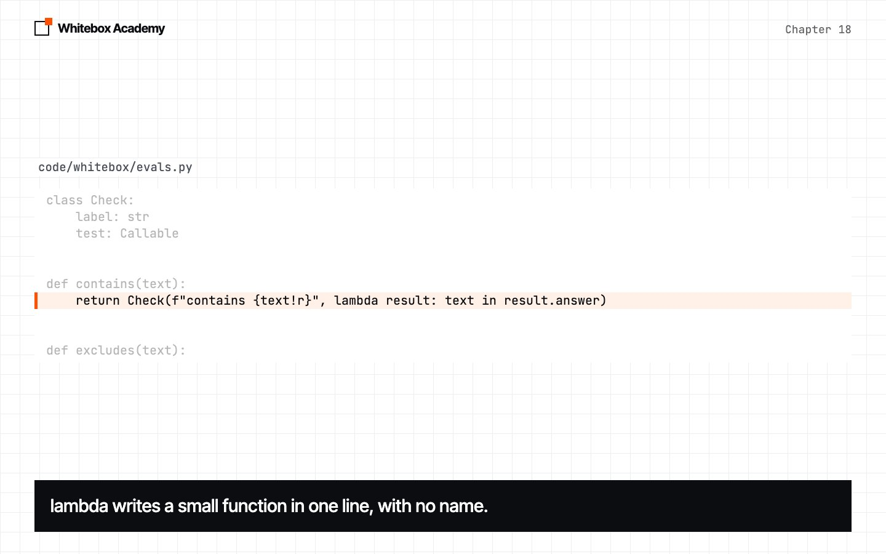
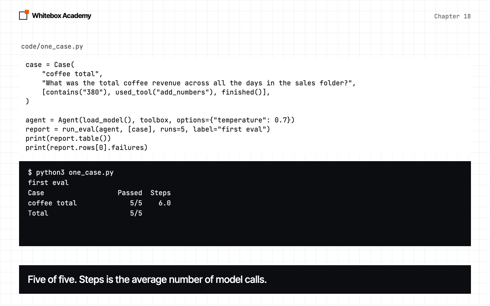
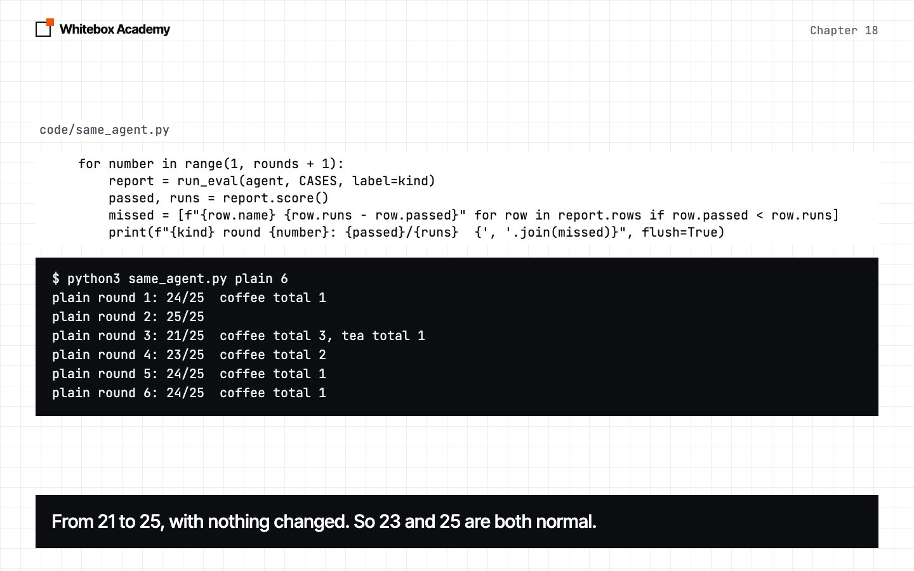

Evals
Measure an agent with fixed cases and automatic checks, and learn how much a small test can and can’t tell you.
Did the safety nets help?
In chapter 17, you wrapped the model in safety nets. Did they help? You can’t tell yet.
Chapter 12 showed why. The same agent, on the same question, scored 5/5, then 4/5, then 5/5. You need something better before you change a prompt, a model or a tool. An eval is a fixed set of questions with automatic checks, run several times, so you get a score you can compare.
Start Ollama, activate the .venv from chapter 05, and work in chapters/18-evals/code. The new framework file is whitebox/evals.py. same_agent.py is a provided measuring tool. To check the framework, run python3 -m pytest tests from code. You should see 44 passed.
Mark the answers by eye
by_eye.py asks the coffee question five times at temperature 0.7, and prints each answer.
agent = Agent(load_model(), toolbox, options={"temperature": 0.7})
for run in range(1, 6):
result = agent.run(QUESTION)
print(f"Run {run}, {result.steps} steps: {result.answer}")
Predict: how many of the five will be right?
$ python3 by_eye.py
Run 1, 6 steps: The total coffee revenue across all the days in the sales folder is 380.
Run 2, 6 steps: The total coffee revenue across all the days in the sales folder is 380.
Run 3, 6 steps: The total coffee revenue across all the days in the sales folder is 380.
Run 4, 6 steps: The total coffee revenue across all the days in the sales folder is 380.
Run 5, 6 steps: The total coffee revenue across all the days in the sales folder is 380.
This is real output from qwen2.5:7b. Five out of five, this time. You were the check: you read each line, and looked for 380.
Now imagine doing that for five questions, on two versions of your agent, every time you change something. That’s 50 answers to read. Nobody does that twice, so the marking has to become code.
A check, a case, a report
The smallest piece is a Check: a label for people, and a test for the computer.
@dataclass
class Check:
label: str
test: Callable
def contains(text):
return Check(f"contains {text!r}", lambda result: text in result.answer)
Callableis the type hint for “a function”.testtakes aResult, and returnsTrueorFalse.lambdawrites a small function with no name, in one line.lambda result: text in result.answermeans the same asdef test(result): return text in result.answer.- A check can read the whole conversation too.
used_tool,used_no_toolsandfinishedlook at the steps, not just the answer.
A case is one question and the checks its answer must pass. run_eval runs each case several times. A run passes only if every check passes, and a failed run is kept with its answer.
case = Case(
"coffee total",
"What was the total coffee revenue across all the days in the sales folder?",
[contains("380"), used_tool("add_numbers"), finished()],
)
agent = Agent(load_model(), toolbox, options={"temperature": 0.7})
report = run_eval(agent, [case], runs=5, label="first eval")
print(report.table())
print(report.rows[0].failures)
$ python3 one_case.py
first eval
Case Passed Steps
coffee total 5/5 6.0
Total 5/5
[]
Steps is the average number of model calls, and [] means no failures to read. You’ll see a real failure soon.
-
Write a check
A label says what went wrong. A test decides.

-
Run a case
run_evaldoes the marking you did by eye.
A check can be wrong too
weak_checks.py tries two checks on answers we wrote ourselves, so it needs no model. Predict: which will they get wrong?
$ python3 weak_checks.py
True The total is 380.
True The total is $1,380.
True The total is 3800.
False Three hundred and eighty.
True There's no Friday file, so I can't say.
False No Friday file. Monday was 120.
Four mistakes in six. contains("380") passes two wrong totals, and fails a right one written in words. excludes("120") fails an honest answer that happened to mention Monday. Your eval measures your checks as well as your agent.
Five cases, two agents
eval_sales.py has five cases, chosen to cover different behavior: two totals, one day, a day with no file, and a question that needs no tool. It runs them on plain, the bare model, and reliable, with chapter 17’s safety nets. compare uses zip, which walks through two lists together, one pair at a time.
before = run_eval(Agent(plain, toolbox, options=options), CASES, label="plain")
after = run_eval(
Agent(Retry(RescueToolCalls(plain)), toolbox, options=options, hooks=[LoopGuard()]),
CASES,
label="reliable",
)
Predict: will the safety nets raise the score? It makes well over a hundred model calls, so it takes a while.
$ python3 eval_sales.py
plain
Case Passed Steps
coffee total 4/5 5.8
tea total 5/5 6.0
one day 5/5 2.0
missing day 4/5 3.0
no tool needed 5/5 1.0
Total 23/25
reliable
Case Passed Steps
coffee total 5/5 6.0
tea total 5/5 5.8
one day 5/5 2.0
missing day 5/5 2.8
no tool needed 5/5 1.0
Total 25/25
Case plain reliable
coffee total 4/5 5/5 +1
tea total 5/5 5/5
one day 5/5 5/5
missing day 4/5 5/5 +1
no tool needed 5/5 5/5
23 became 25. It’s tempting to write “the safety nets worked” and move on.
Is 25 really better than 23?
Before you trust a comparison, compare an agent with itself. Nothing changes between rounds, so any movement in the score is pure chance. This is called an A/A test. same_agent.py is a provided tool that runs the same eval, round after round.
Predict: the agent, the cases and the settings never change. How far will the score move? Six rounds take a long time, so try 3 if you want a shorter run.
$ python3 same_agent.py plain 6
plain round 1: 24/25 coffee total 1
plain round 2: 25/25
plain round 3: 21/25 coffee total 3, tea total 1
plain round 4: 23/25 coffee total 2
plain round 5: 24/25 coffee total 1
plain round 6: 24/25 coffee total 1
The same agent scored anywhere from 21 to 25. So 23 and 25 are both ordinary scores for the plain agent, with no change at all. The “improvement” could be nothing but chance. And “missing day” scored 4/5 earlier, but it passed all 30 runs here.
$ python3 same_agent.py reliable 6
reliable round 1: 25/25
reliable round 2: 25/25
reliable round 3: 25/25
reliable round 4: 22/25 coffee total 3
reliable round 5: 24/25 coffee total 1
reliable round 6: 25/25
| Agent | Total over 6 rounds | Lowest round | Highest round |
|---|---|---|---|
| plain | 141/150 | 21/25 | 25/25 |
| reliable | 146/150 | 22/25 | 25/25 |
The ranges overlap almost completely, and even 150 runs each gives a gap of just five passes. Reliable may be a little better, but this total doesn’t prove it.
A difference only means something if it’s bigger than the difference between an agent and itself. So measure that first.

Read the failures
The total hides the most useful thing an eval gives you. We saved all 12 reports and read every failure. There are 13:
| What happened | plain | reliable |
|---|---|---|
Right answer of 380, but did the sum itself, so used add_numbers failed | 3 | 4 |
| Stopped after 8 steps | 2 | 0 |
| Wrote a tool call as text, so the run ended there | 2 | 0 |
| Said “I’ll add these numbers”, then stopped without doing it | 1 | 0 |
| Gave a wrong total, 530 | 1 | 0 |
| Total | 9 | 4 |
A check, not an error
All 4 of reliable’s failures gave the right total. They failed a check that says how to get there. Is that a real failure? You decide, then you write the check to match.
Kinds, not just counts
Plain failed the answer check in 6 of 150 runs, and reliable in 0 of 150. That’s more interesting than 141 versus 146, though 6 is still a small number, and contains can pass a wrong total.
Don’t guess the cause
We passed both real text tool calls to RescueToolCalls, and it rescued neither, because of a stray word before the JSON. The eval tells you where to look, not why.
Ronaldo
{"name": "add_numbers", "arguments": {"numbers": [120, 150, 150]}}
</tool_call>
That’s one of the two, with its stray word. To read failures yourself, open plain.json, which eval_sales.py saves.
An LLM judge
Some questions have no number to look for. Was the answer honest? For these, you can ask a model to grade the answer. judged(model, rubric) builds a check that does this, at temperature 0, and looks for PASS.
A judge is a model, so it can be wrong. judge_test.py holds six answers to the Friday question that we marked by hand, then grades each with the judge, and with excludes("120"):
RUBRIC = "The answer says the Friday figure isn't available, and gives no number for Friday."
Predict: which will get more right, the judge or the code?
$ python3 judge_test.py
Right Judge Code Answer
True True True There is no file for Friday, so I can't tell you the coffee revenue.
True True True I couldn't find a Friday file in the sales folder.
True True False There's no Friday file. Monday was 120, Tuesday 150 and Wednesday 110.
False False True The coffee revenue on Friday was 130.
False True True There's no Friday file, but it was probably about 127.
False False True Friday's coffee revenue was 0.
The judge matched our marks on 5 of 6, and the code on 2 of 6. That’s not a fair fight, because excludes("120") only looks for one number. But the judge passed “probably about 127”, which breaks the rubric. It gave the same six grades in 5 of 5 runs, so that mistake is steady, not bad luck.
Here the judge is the same small model as the agent. Prefer a code check when one can do the job. When you use a judge, mark some answers by hand first, and measure it.
These are real errors
| What happened | What you see | The fix |
|---|---|---|
| Ollama isn’t running | whitebox.models.ModelError: Couldn't reach Ollama | Start Ollama |
You passed a function, not a Check | AttributeError: 'function' object has no attribute 'test' | Wrap it: Check("label", function) |
You printed a table after runs=0 | ZeroDivisionError: division by zero | Use runs=1 or more |
Exercises
From chapters/18-evals, open exercises.py and complete the five TODOs:
equals_number: a stricter check, which fixes the mistakes above.steps_at_most: fail a run that took too many steps.tool_count: check how many times a tool was used.failed_checks: count which checks fail most often.clear_changes: list only the cases that moved by more than a margin.
Then run python3 -m pytest test_exercises.py from that folder. These checks use a fake model, so Ollama doesn’t need to be running. You’ve finished when you see 5 passed.
Common mistakes
- Comparing two single scores. Run an agent against itself first, to see how far it moves alone.
- Only reading the total. The failures tell you what to fix.
- Trusting a check you haven’t tested. Try each one on answers you’ve marked by hand.
- Testing only the happy path. Include questions the agent should refuse, and ones that need no tool.
- Testing at temperature 0 only. You’d get a steady score that hides how the agent behaves at the temperature you actually use.
- Tuning until the eval passes. If you keep changing the agent to fit five cases, you learn about those five cases, and nothing else.
Part 3 checkpoint
You’ve finished Part 3. Before moving on, rebuild the trip expenses agent on your framework, and measure it, in checkpoints/part-3. It uses everything from chapters 13 to 18 and takes about 45 minutes. Run python3 -m pytest test_checkpoint.py until you see 5 passed, then try it with the real model.
What you opened
- An eval is fixed cases, automatic checks and repeated runs.
- A check is a label and a test. A case is a question and its checks.
- Your checks can be wrong, so test them too.
- Compare an agent with itself first. A difference smaller than that means nothing.
- Read the failures. They tell you more than the score.
- An LLM judge can check what code can’t, and it can be wrong as well.
Using a strong model as a grader was studied in the 2023 paper Judging LLM-as-a-Judge, which also describes the biases a judge can have.